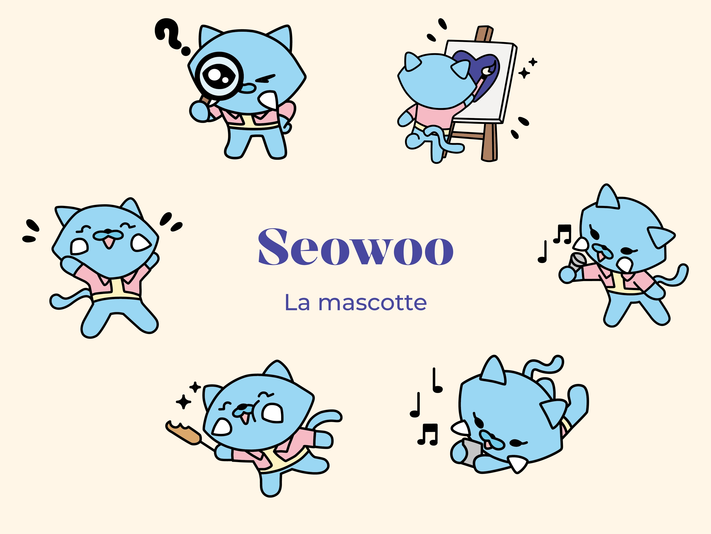
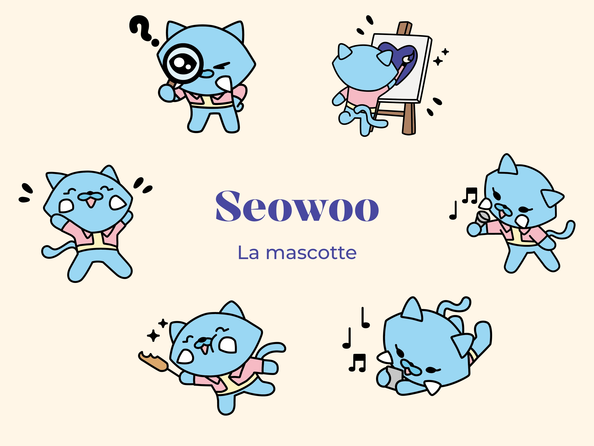

Seoulmate Festival
Créer une plateforme immersive pensée pour engager et convertir
Comment capturer l’énergie de la K-pop sans sacrifier la clarté et la conversion ?
Les festivals sont des expériences émotionnelles : anticipation, excitation, immersion.
Pourtant, les sites de festivals que j’ai analysés partagent un même défaut :
- Une identité visuelle générique ou peu différenciante
- Une architecture d’information confuse
- Un parcours utilisateur peu orienté vers l’action
- Un manque de narration immersive
Les sites parlent du festival, mais pas à la personne qui veut y aller.
Créer une plateforme qui capte l’émotion et facilite la conversion.

Priorité à l’utilisateur
En me mettant à la place du visiteur, j’ai identifié trois besoins principaux :
- Projeter émotionnellement dans l’événement
- Être rassuré rapidement
- Passer à l’action sans friction
Tout le design découle de cette priorité : réduire la friction entre l’envie et l’action.


Décisions clés
-
Entrée immersive + Clarification du parcours
Problème observé
Le site pose une ambiance forte mais l’utilisateur ne sait pas immédiatement où aller.Décision
Créer un hero immersif suivi d’un checkpoint visuel (section « Présentation du festival » clairement délimitée)Impact UX
Guide l’utilisateur dès les premières secondes → moins de friction cognitive. -
Structuration améliorée du Line-Up
Problème observé
Le line-up est présent mais manque de hiérarchie visuelle et de scannabilité.Décision
Introduire une structure visuelle : mise en avant des headliners, cartes artistes identifiables, infos horaire / scène visiblesImpact UX
L’utilisateur comprend en un clin d’œil les têtes d’affiche → plus de clarté. -
Billetterie accessible et facile à trouver
Problème observé
Le lien “Billetterie” est uniquement dans le menu.Décision
Créer des CTA répétés dans le parcours.Impact UX
L’utilisateur ne perd jamais le chemin vers la conversion. -
Cohérence d’univers entre site et réseaux
Problème observé
L’identité est forte mais parfois éclatée entre les supports.Décision
Harmoniser les codes visuels entre : site, Instagram, affiche et vidéo promotionnellesImpact UX
Renforcement émotionnel et sensation de continuité. -
Approche Mobile-First + Réassurance
Problème observé
Beaucoup d’utilisateurs préfèrent acheter via mobile.Décision
Optimiser les : proportions, boutons clairs, micro-interactionsImpact UX
Un tunnel qui rassure → plus de conversion.

Exploration visuelle
Un univers immersif au service de la clarté
L’identité visuelle s’inspire des codes pop et street coréens : couleurs vibrantes, contrastes forts et textures dynamiques.
Chaque choix graphique a été pensé pour structurer l’information et guider le regard — pas seulement pour créer de l’impact.

 

Du wireframe à l’interaction
Les wireframes m’ont permis de valider la hiérarchie, le rythme du scroll et l’accès à la billetterie avant d’appliquer l’identité visuelle.
Les itérations ont affiné la lisibilité du line-up et la place des CTA pour réduire la friction.


Apprentissages
Ce projet m’a appris à :
- Structurer une expérience immersive sans perdre en clarté
- Traduire un univers graphique fort en parcours fluide
- Penser conversion dès la phase conceptuelle
- Décliner un système visuel sur plusieurs supports